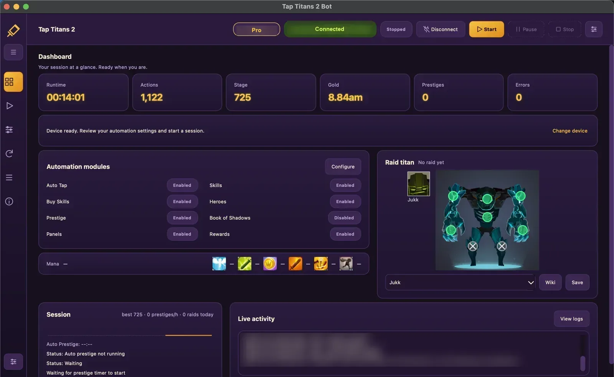

Desktop app. Real Android phone.
Let your phone play Tap Titans 2 while you do something else
The bot taps, casts skills, levels heroes and prestiges on your own Android phone, driven from your computer over USB.
Windows / macOS / Linux
On your computer
A Tap Titans 2 bot for your phone
- It plays Tap Titans 2 on your own Android phone, connected to your computer with a USB cable.
- It taps, casts skills, levels heroes and prestiges at the right moment, for hours at a time.
- It is built never to tap anything that costs real money.

The everyday work
Auto tap, skills and raids
The feature list could not be loaded. Every feature is compared on the pricing page.
Inside the game & the app
See it running
Screenshots and videos are on their way.
From download to first tap
How it works
Install
Download the app for Windows, macOS or Linux and install it.
Connect the phone
Turn on USB debugging on your Android phone and plug it into the computer.
Start
Open Tap Titans 2 on the phone and press Start in the app.
Your next session
Try it free
Every Pro feature is free for 24 hours, once per computer. No account, no card.